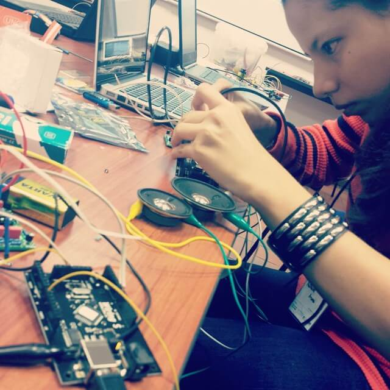
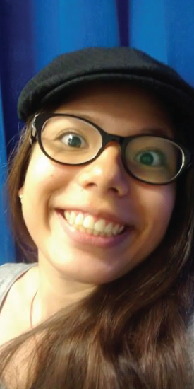
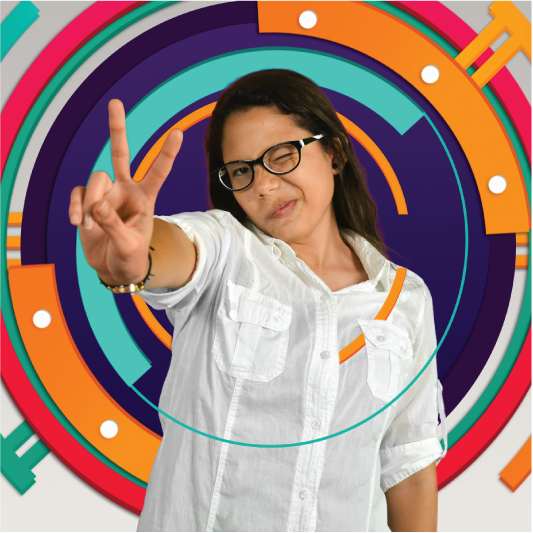

I am Nathalie Arana Moreno from the Icesi University in Cali - Colombia.
I am interested in UX/UI Design, Electronic Art, Photography and
Research.
I like reading, watching movies and the interactive experience.

PHOTOGRAPHY PROJECT
Take a look

Your body is a world made of textures and emotions, let it travel through the lecture.
"PaperBody" is a photographic project that is inspire in the stories of Jorge Luis Borges.
Tu cuerpo es un mundo hecho de texturas y emociones, deja que viaje por medio de la lectura.
"PaperBody" es un proyecto fotográfico inspirado en las historias de Jorge Luis Borges.
Role: Photographer.
Rol: Fotógrafa.
Software: Photoshop.
ILLUSTRATION PROJECT
Take a look“Marimba a la Lámpara” is a project designed with the idea of connecting the public to the Pacific culture and natural wonders through the interaction with an audiovisual object.
Take a lookBRANDING PROJECT
Take a lookWEB DESIGN PROJECT
Take a lookUX/UI PROJECT
Take a look"Cuento de fantasmas" is an exploratory videogame. Two players are released into an unknown and desolate world which they can explore until two players find each other, when they make contact, the worlds ecosystem will come to life. The aim of this project was to encourage human contact in modern society, which has forgotten its importance for humanity wellbeing.
Cuento de Fantasmas es un videojuego exploratorio que busca que sus jugadores exploren un mundo completamente desconocido, hasta que por lo menos dos de estos jugadores generan contacto, creando así vida dentro del planeta. De esta forma, se espera fomentar el concepto de el tacto como creador de vida, el cual es un proceso natural en nuestro mundo; siendo este el principal sentido que se estimula durante el proceso de procreación.
Role: Arduino and Processing Programming .
Rol: Programación de Arduino y Processing.
Software: Arduino, Processing.
Team Members / Grupo de Trabajo:
Nathalie Arana Moreno
Kammil Carranza
Sebastián López Castro
Sebastián Terán
Android App
Take a lookINNBOARD is a mobile app which objective is to make easier the innovation process inside the enterprises starting in the idea generation and ending with the definition of those ideas.
INNBOARD es una aplicación móvil que facilita los procesos de innovación de las empresas desde la ideación hasta la definición de las ideas.
Role: UX/UI Designer and XML Programmer.
Rol: Diseñadora UX/UI y programadora XMl.
Team Members / Grupo de Trabajo:
Nathalie Arana Moreno
Sebastián López Castro
Software: Illustrator, Android Studio.
Interactive Wearable
Take a look